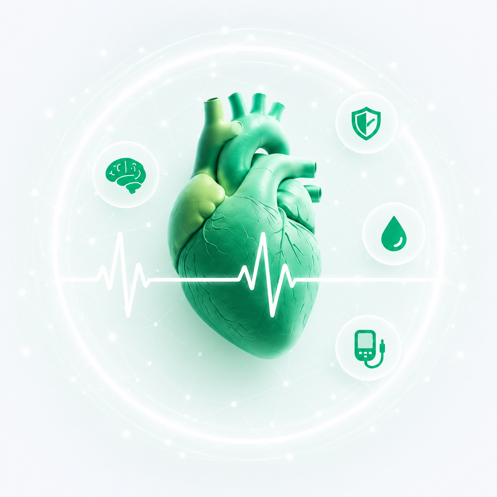

دانشنامه پزشکی مجموعهای از اطلاعات علمی، آموزشی و کاربردی درباره بیماریها، سلامت بدن، تغذیه، سیستم ایمنی و سبک زندگی سالم است. هدف این صفحه افزایش آگاهی کاربران و ارائه اطلاعات پزشکی به زبانی ساده و قابل فهم میباشد.

هر آنچه درباره تقویت سیستم ایمنی، بیماریها و راههای پیشگیری باید بدانید
مشاهده مقالات ←فشار خون نیرویی است که خون به دیواره رگها وارد میکند. وقتی این نیرو مداوم بالاتر از حد طبیعی باشد، فرد دچار فشار خون بالا است. اغلب به آن «قاتل خاموش» میگویند زیرا در بسیاری از افراد بدون هیچ علامت ظاهری، به تدریج به قلب و رگها آسیب جدی وارد میکند.
عدم کنترل فشار خون میتواند منجر به حوادث جبرانناپذیری شود:
• قلب و عروق: افزایش احتمال سکته قلبی و نارسایی قلبی.
• مغز: خطر سکته مغزی به دلیل پارگی یا گرفتگی عروق مغزی.
• کلیهها و چشمها: آسیب به فیلترهای کلیه و عروق حساس شبکیه چشم که میتواند باعث کاهش بینایی شود.
مدیریت فشار خون ترکیبی از سبک زندگی و در صورت نیاز، دارو است:
• تغذیه (رژیم DASH): کاهش مصرف نمک (سدیم)، افزایش مصرف میوهها، سبزیجات و منابع پتاسیم.
•تحرک: حداقل ۱۵۰ دقیقه ورزش هوازی ملایم در هفته.
• کنترل وزن و استرس: کاهش وزن اضافی و یادگیری تکنیکهای مدیریت استرس، تأثیر چشمگیری در کاهش فشار خون دارند.
دیابت یک اختلال متابولیک است که در آن بدن نمیتواند قند خون (گلوکز) را به درستی تنظیم کند.
• نوع ۱: معمولاً در سنین پایین رخ میدهد و بدن انسولین تولید نمیکند.
• نوع ۲: شایعترین نوع است که بدن در برابر اثرات انسولین مقاوم میشود و معمولاً با سبک زندگی در ارتباط است.
• دیابت بارداری: نوعی از قند خون بالاست که در دوران بارداری ظاهر میشود و نیاز به مراقبت ویژه دارد.
بدن معمولاً با علائم زیر هشدار میدهد: تشنگی مداوم، تکرر ادرار (بهویژه در شب)، گرسنگی شدید، کاهش وزن بیدلیل، تاری دید و دیر خوب شدن زخمها.
برای تشخیص دقیق، آزمایشهای زیر توسط پزشک تجویز میشود:
• آزمایش قند خون ناشتا (FBS): اندازهگیری قند بعد از ۸ ساعت ناشتایی.
• آزمایش هموگلوبین A1c: میانگین قند خون فرد را در ۳ ماه گذشته نشان میدهد.
• تست تحمل گلوکز (OGTT): بررسی واکنش بدن به قند مصرفی.
مدیریت دیابت نه به معنای محدودیت مطلق، بلکه به معنای انتخاب هوشمندانه است:
• تغذیه: تمرکز بر کربوهیدراتهای پیچیده (غلات کامل)، فیبر زیاد (سبزیجات) و پروتئینهای کمچرب. حذف قندهای مصنوعی و نوشیدنیهای قندی ضروری است.
• ورزش: حداقل ۱۵۰ دقیقه فعالیت هوازی در هفته (مثل پیادهروی سریع) به حساسیت بهتر سلولها به انسولین کمک میکند.
• کنترل منظم: پایش قند خون در خانه و پایبندی به داروهای تجویزی پزشک یا انسولین برای جلوگیری از عوارض طولانیمدت مانند بیماریهای قلبی و کلیوی حیاتی است.
سیستم ایمنی شما مانند یک ارتشِ فوقهوشمند عمل میکند که از دو بخش اصلی تشکیل شده است:
• ایمنی ذاتی: خط دفاعی اول که شامل پوست، مخاط و گلبولهای سفید عمومی است که سریعاً به هر عامل خارجی حمله میکنند.
• ایمنی اکتسابی: این بخش بسیار اختصاصی عمل میکند؛ پس از اینکه بدن یک بار با ویروس یا باکتری مواجه شد، آن را "به خاطر میسپارد" و در برخوردهای بعدی با سرعت بسیار بیشتری آن را نابود میکند. این دقیقاً همان مکانیسم عمل واکسنهاست.
گاهی سیستم ایمنی دچار اختلال میشود و کارایی خود را از دست میدهد. نشانههای زیر هشداری برای ضعیف شدن آن هستند:
• عفونتهای مکرر: ابتلا به بیش از ۳ تا ۴ بار سرماخوردگی یا عفونت گوش در سال.
• التهاب اندامهای داخلی: احساس دردهای مبهم و التهاب در مفاصل یا دستگاه گوارش.
• تأخیر در ترمیم: بریدگیها و زخمهای جزئی بسیار دیرتر از حد معمول بهبود مییابند.
• خستگی مفرط: حتی با وجود خواب کافی، همیشه احساس خستگی و بیحالی دارید.
تقویت سیستم ایمنی یک شبه اتفاق نمیافتد و نیاز به استمرار در سبک زندگی دارد:
• تغذیه رنگینکمانی: مصرف میوهها و سبزیجات با رنگهای متنوع برای دریافت طیف کامل آنتیاکسیدانها.
• مدیریت استرس: هورمون کورتیزول (هورمون استرس) مستقیماً فعالیت گلبولهای سفید را سرکوب میکند؛ تمرینات مدیتیشن و تنفس عمیق در اینجا معجزه میکنند.
• خواب باکیفیت: در زمان خواب عمیق، بدن پروتئینهایی به نام "سایتوکاین" تولید میکند که برای مبارزه با عفونتها حیاتی هستند.
• مکملهای هوشمند: مشورت با پزشک برای بررسی سطح ویتامین D، چرا که کمبود این ویتامین یکی از اصلیترین دلایل تضعیف ایمنی در دنیای امروز است.
سلامت روان فقط به معنای نبودِ بیماری روانی نیست؛ بلکه وضعیتی از رفاه است که در آن فرد تواناییهای خود را میشناسد، با فشارهای معمول زندگی کنار میآید و میتواند بهطور موثر کار و فعالیت کند.
• سلامت هیجانی: توانایی مدیریت احساسات (شادی، خشم، غم).
• سلامت شناختی: توانایی تفکر منطقی، تمرکز و حل مسائل.
• سلامت اجتماعی: توانایی برقراری روابط سالم و سازنده با دیگران.
همه ما ممکن است روزهای سختی داشته باشیم، اما زمانی که این وضعیتها پایدار شوند، باید جدی گرفته شوند:
• تغییر در عادات خواب و خوراک: کمخوابی یا پرخوابی مداوم، و تغییر اشتها.
• انزوای اجتماعی: فاصله گرفتن از دوستان و فعالیتهایی که قبلاً از آنها لذت میبردید.
• تغییرات خلقی شدید: احساس ناامیدی، اضطراب مداوم یا خشم غیرقابل کنترل.
• علائم جسمی بدون علت پزشکی: سردردهای تنشی، دردهای عضلانی یا مشکلات گوارشی ناشی از استرس.
تقویت سلامت روان یک فرآیند فعالانه است:
• ذهنآگاهی (Mindfulness): تمرین در لحظه بودن و مشاهده افکار بدون قضاوت؛ این کار به شدت اضطراب را کاهش میدهد.
• تعیین مرزهای سالم: یاد بگیرید که به فعالیتها یا روابطی که انرژی شما را بیش از حد تخلیه میکنند، "نه" بگویید.
• ارتباط با طبیعت و فعالیت بدنی: ورزش منظم باعث ترشح اندورفین (هورمون شادی) و کاهش هورمونهای استرس میشود.
• درخواست کمک: صحبت کردن با یک روانشناس یا مشاور، نشاندهنده قدرت شماست، نه ضعف شما.